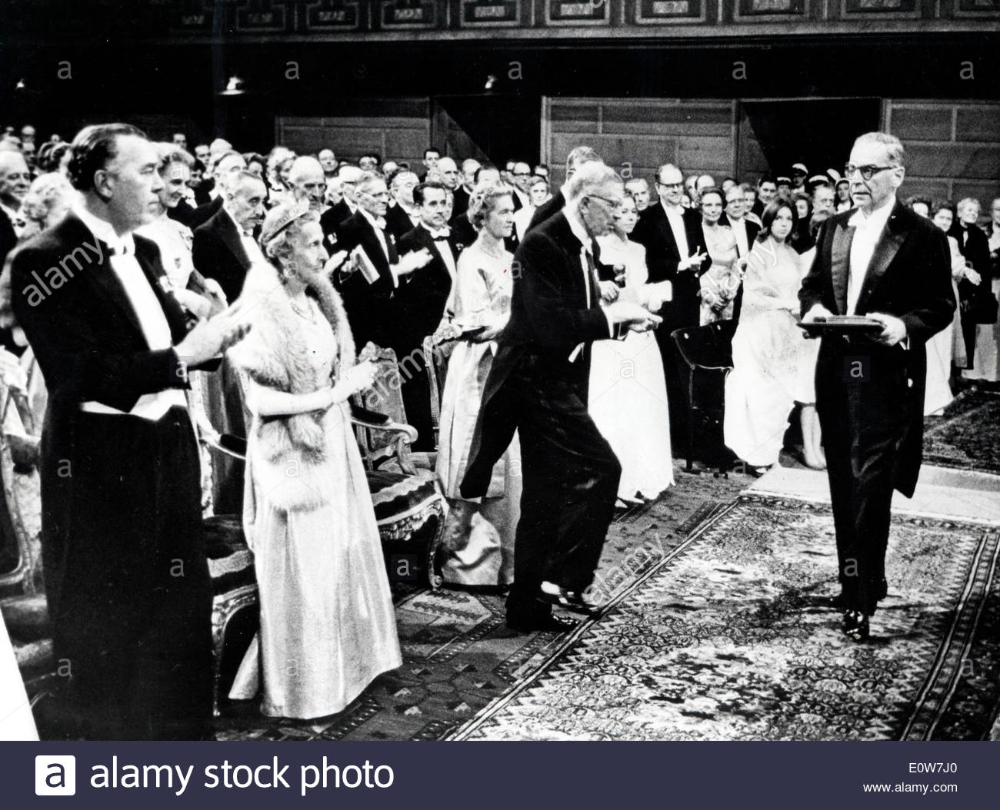
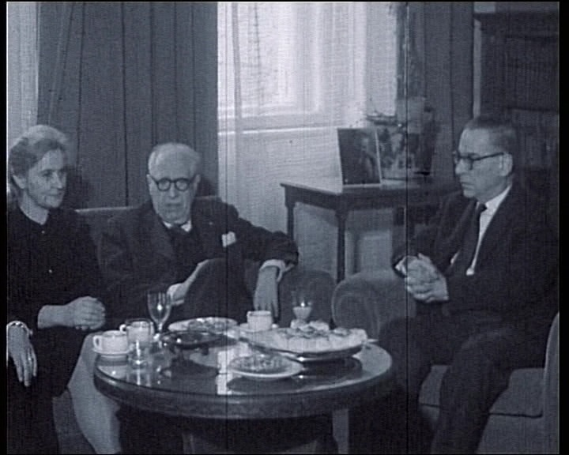

Ivo Andric
Yugoslav novelist, poet and short story writer
winner of the Nobel Prize in Literature in 1961
Ivo Andric standing next to the Drini bridge.
Here is a timeline of Ivo Andric's life ...
- 1892
-
Born as Ivon Andric to Antun Andric and Katarina Pejic, in Travnic.
Andrić's father, a silversmith, died due to tuberculosis when Andrić was just two years old. He was brought up by his kin and went to elementary school in Višegrad, the town that he associated the most with his childhood.
- 1903
-
At the age of ten, he received a three-year scholarship to study in Sarajevo.
Ivon joined his mother in Sarajevo and attended the Great Sarajevo Gymnasium for eight years.
- 1911
-
Andrić published his first poem, "U sumrak."(At Twilight).
In 1912 he received a scholarship from the cultural-educational society Napredak to attend the University of Zagreb, where his course load was heavy in science.
- 1913
-
Andrić enrolled at the University of Vienna, where he studied literature, philosophy, and history.
In 1913, when he transferred to the University of Vienna, his academic interest shifted from science to the humanities. In 1914, Andrić entered the University of Kraków; that same year the Croatian Writers Society published six of Andrić's prose poems in their anthology, Hrvatska mlada lirika (Young Croatian Lyricists).
-
Prior to attending university, Andrić had become involved with one of the many Bosnian underground resistance groups. Upon his return to Sarajevo he was arrested on the allegation of his involvement in the assassination of Archduke Franz Ferdinand and his wife in Sarajevo on June 28, 1914—an action that triggered a chain of events that led to the outbreak of the First World War. He was detained in jail until March 1915.

- 1918
-
Andrić spent his prison years reading Fedor Dostoevsky and Søren Kierkegaard.
Upon his release he worked as an editor at the literary journal Književni Jug (The Literary South). In 1918 Andrić reregistered at the University of Zagreb where he completed the coursework but withdrew before the exams because of ill health.
-
Andrić had planned to complete the exams as soon as he recovered but was diverted from this plan because of his family's dire financial circumstances. Consequently, he wrote a letter to a former teacher who had become a cabinet minister in the postwar Kingdom of the Serbs, Croats and Slovenes, applying for a government position.
- 1919
-
Andrić became a junior minister in the ministry of faith and moved to Belgrade.
He remained at the ministry of faith until February 1920 when he transferred to the ministry of foreign affairs. Andrić's first foreign posting was to the Vatican in Rome, Italy, as a vice-consul.
- 1920-1923
-
His collection of poems titled ‘Nemiri’ and the short story, ‘Put Alije Djerzeleza’ was published.
- 1922
-
Was reassigned to the Consulate in Trieste
The following year, he worked in the Consulate of Graz but his job with the Ministry of Foreign Affairs was at stake, as he had not completed his degree
This made him enroll at the Faculty of Philosophy in Graz and in 1924; he was able to retain his career by defending his doctorate thesis, ‘The Development of Spiritual Life in Bosnia Under the Influence of Turkish Rule’.
- 1924
-
He was transferred to the Political Department of the Ministry of Foreign Affairs in Belgrade.
The same year his first anthology of short stories was published by the Serbian Literary Association titled, ‘U zindanu’ and ‘Rzavski bregovi’.
- 1926
-
Became the member of the Serbian Academy of Science and Art
The same year, his stories, ‘Mara milosnic’ and 'Cudo u Olovu’ were published.
He served in the Consulates of Paris and Marseilles, in 1927 and spent most of his free time reading history related to Bosnia and reading the mail of Pierre David, the French diplomat in Travnik.
- 1930
-
Wrote an essay on Simon Bolivar and his travel story, ‘Portugal, zelena zemlja’.
Two years later, he published another collection of short-stories including, ‘Smrt u Sinanovoj tekiji’, ‘Na ladi’, ‘Leteci nad morem’.
- 1935
-
Headed the political department of the Ministry of Foreign Affairs.
The same year, short-stories like, ‘Bajron u Sintri’ and ‘Deca’, were published.
-
His diplomatic career was ascending and he was appointed as deputy minister of foreign affairs in November 1937. Despite being bestowed with tremendous responsibilities, he still managed to publish ‘Trup’ and ‘Likovi’.
-
He remained a Yugoslav ambassador to Berlin in Germany until the German invasion in 1941. He retired from the diplomatic services and refused to leave occupied Belgrade.
- From 1941 to 1945
-
Andrić penned his most important novels yet: ‘Travnicka hronika’, ‘Na Drini cuprija’ and ‘Gospodica’. Post-World War II, he was appointed as the president of the ‘Yugoslav Writers Association’.
- 1961
-
Awards & Achievements
He won the Nobel Prize for Literature in 1961, after the publication of ‘Na Drini cuprija’ lorempixel.

-
After his wife passed away in 1968, he became more of a recluse and stopped involving himself with social activities. Just before his death, he grew very ill and spent the last few years of his life alone. His book ‘Omer-Pasha Latas’ was published posthumously in 1977.
